01 · Core Agentic
Full sizeSlide text
Primitive AI
Core
Agentic
AI workers that reason, plan,
and act in your systems

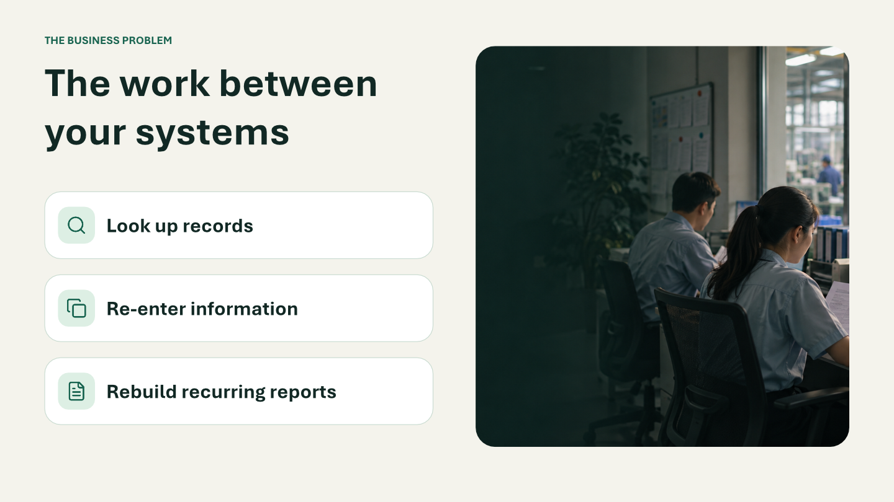
02 · The work between your systems
Full sizeSlide text
THE BUSINESS PROBLEM
The work between
your systems
Look up records
Re-enter information
Rebuild recurring reports

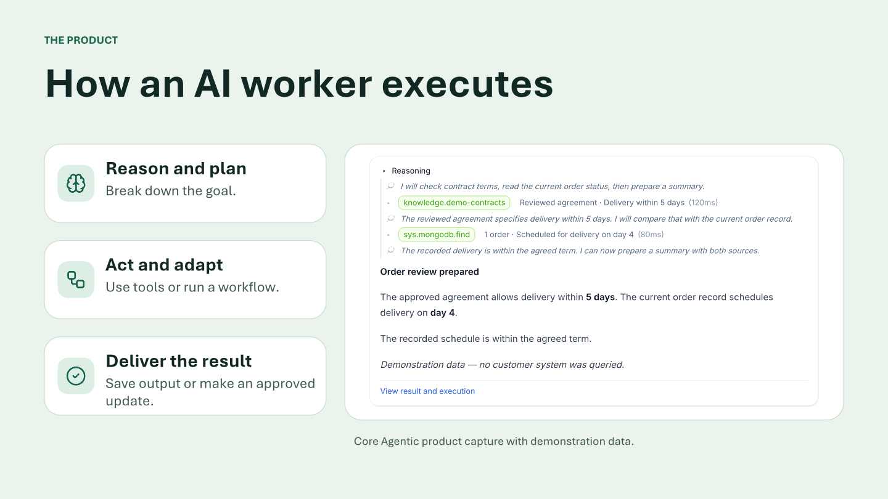
03 · How an AI worker executes
Full sizeSlide text
THE PRODUCT
How an AI worker executes
Reason and plan
Break down the goal.
Act and adapt
Use tools or run a workflow.
Deliver the result
Save output or make an approved update.
Core Agentic product capture with demonstration data.

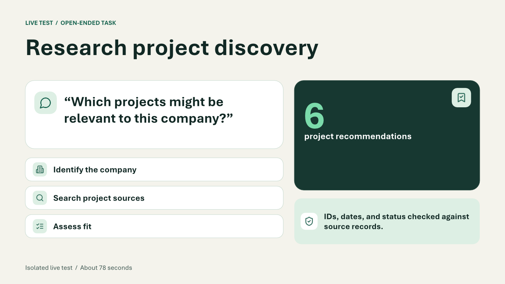
04 · Research project discovery
Full sizeSlide text
LIVE TEST / OPEN-ENDED TASK
Research project discovery
“Which projects might be relevant to this company?”
Identify the company
Search project sources
Assess fit
6
project recommendations
IDs, dates, and status checked against source records.
Isolated live test / About 78 seconds

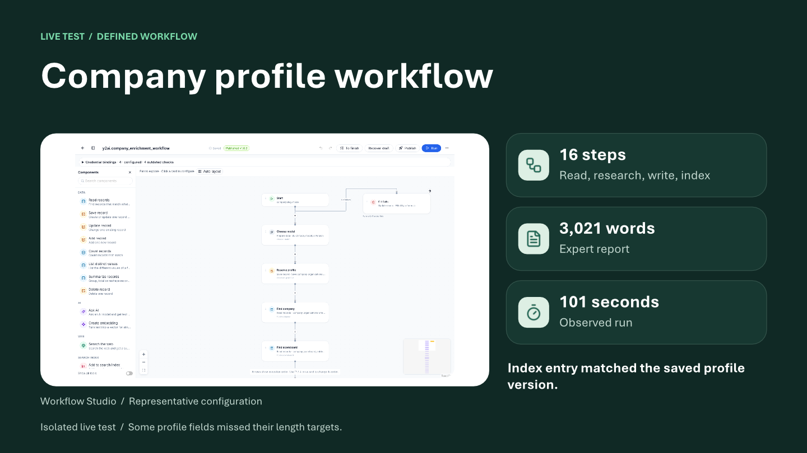
05 · Company profile workflow
Full sizeSlide text
LIVE TEST / DEFINED WORKFLOW
Company profile workflow
Workflow Studio / Representative configuration
16 steps
Read, research, write, index
3,021 words
Expert report
101 seconds
Observed run
Index entry matched the saved profile version.
Isolated live test / Some profile fields missed their length targets.

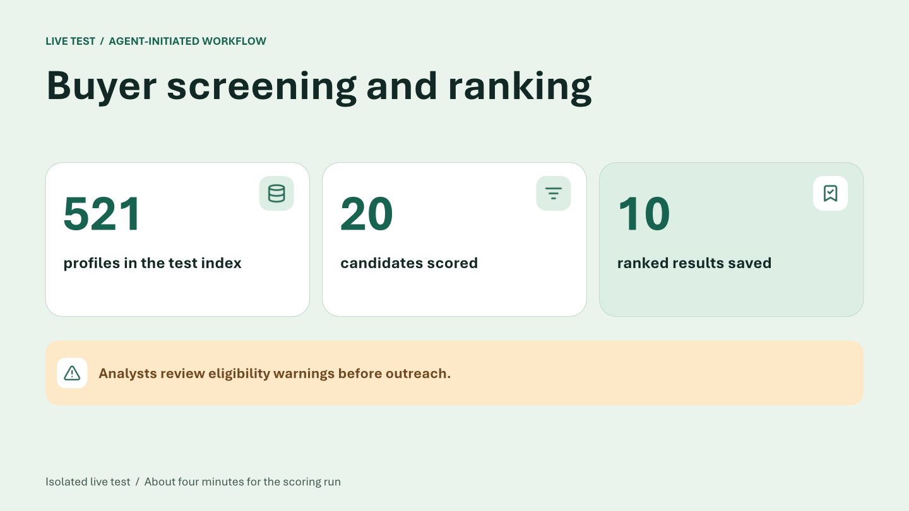
06 · Buyer screening and ranking
Full sizeSlide text
LIVE TEST / AGENT-INITIATED WORKFLOW
Buyer screening and ranking
521
profiles in the test index
20
candidates scored
10
ranked results saved
Analysts review eligibility warnings before outreach.
Isolated live test / About four minutes for the scoring run

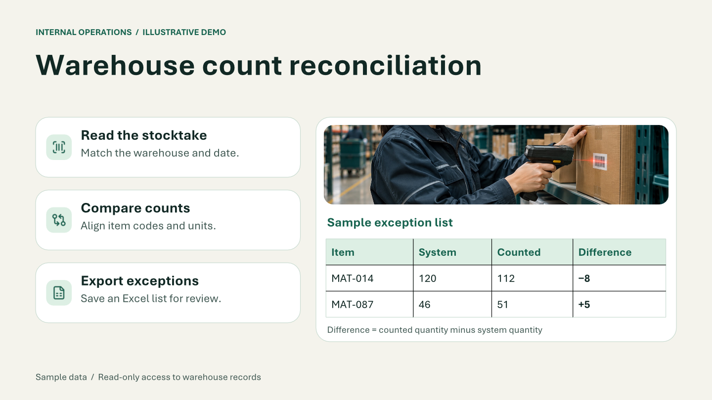
07 · Warehouse count reconciliation
Full sizeSlide text
INTERNAL OPERATIONS / ILLUSTRATIVE DEMO
Warehouse count reconciliation
Read the stocktake
Match the warehouse and date.
Compare counts
Align item codes and units.
Export exceptions
Save an Excel list for review.
Sample exception list
Item
System
Counted
Difference
MAT-014
120
112
−8
MAT-087
46
51
+5
Difference = counted quantity minus system quantity
Sample data / Read-only access to warehouse records

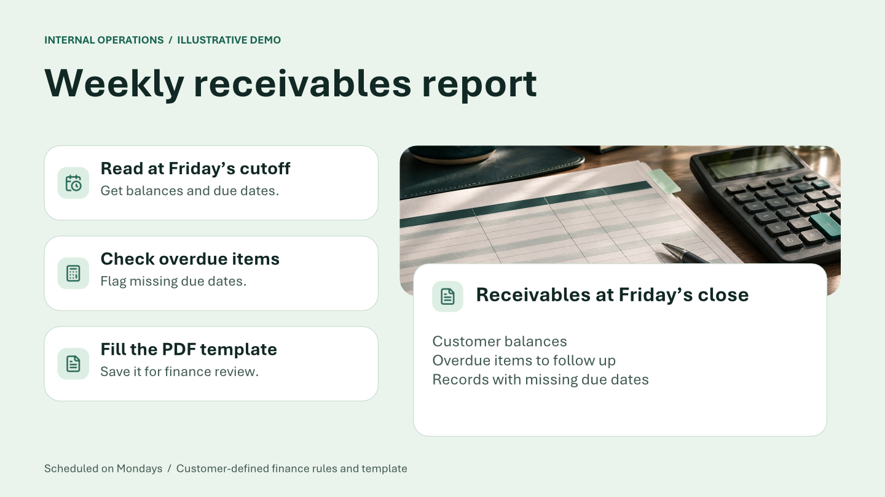
08 · Weekly receivables report
Full sizeSlide text
INTERNAL OPERATIONS / ILLUSTRATIVE DEMO
Weekly receivables report
Read at Friday’s cutoff
Get balances and due dates.
Check overdue items
Flag missing due dates.
Fill the PDF template
Save it for finance review.
Receivables at Friday’s close
Customer balances
Overdue items to follow up
Records with missing due dates
Scheduled on Mondays / Customer-defined finance rules and template

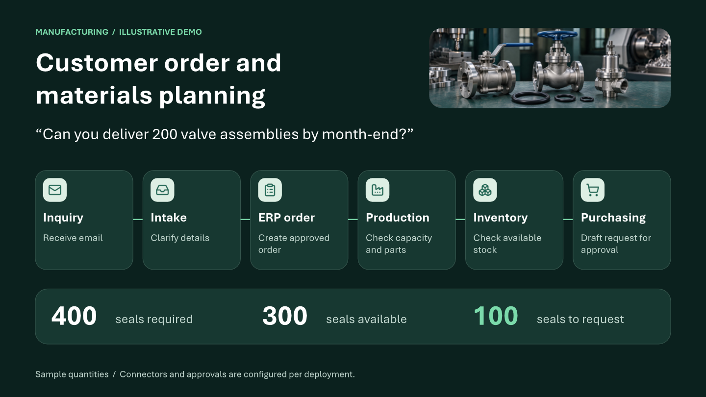
09 · Customer order and materials planning
Full sizeSlide text
MANUFACTURING / ILLUSTRATIVE DEMO
Customer order and
materials planning
“Can you deliver 200 valve assemblies by month-end?”
Inquiry
Receive email
Intake
Clarify details
ERP order
Create approved order
Production
Check capacity and parts
Inventory
Check available stock
Purchasing
Draft request for approval
400
seals required
300
seals available
100
seals to request
Sample quantities / Connectors and approvals are configured per deployment.

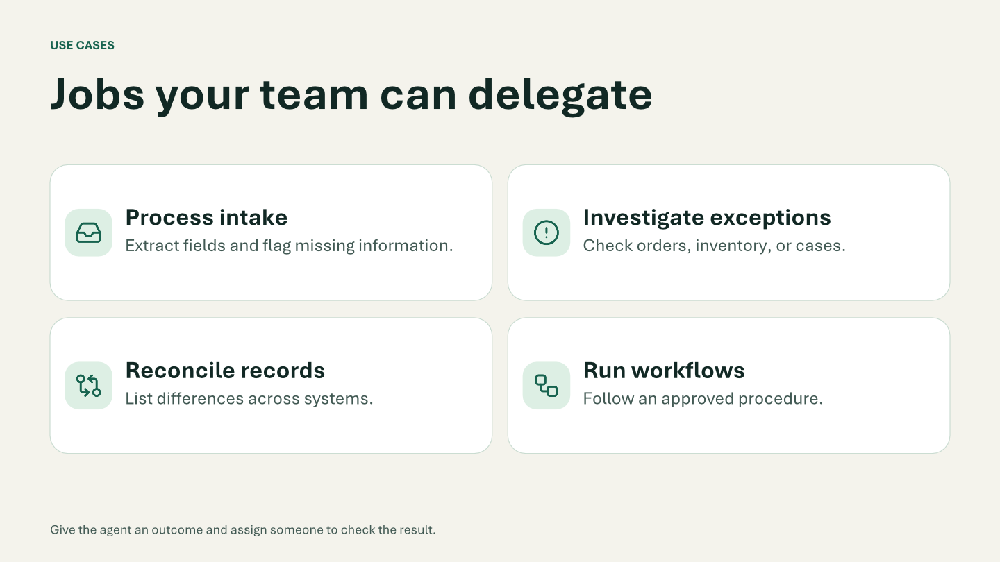
10 · Jobs your team can delegate
Full sizeSlide text
USE CASES
Jobs your team can delegate
Process intake
Extract fields and flag missing information.
Investigate exceptions
Check orders, inventory, or cases.
Reconcile records
List differences across systems.
Run workflows
Follow an approved procedure.
Give the agent an outcome and assign someone to check the result.

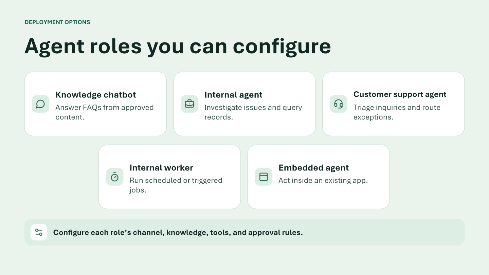
11 · Agent roles you can configure
Full sizeSlide text
DEPLOYMENT OPTIONS
Agent roles you can configure
Knowledge chatbot
Answer FAQs from approved content.
Internal agent
Investigate issues and query records.
Customer support agent
Triage inquiries and route exceptions.
Internal worker
Run scheduled or triggered jobs.
Embedded agent
Act inside an existing app.
Configure each role’s channel, knowledge, tools, and approval rules.

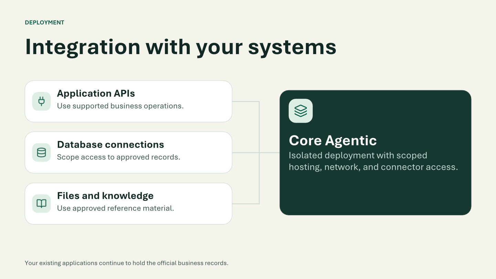
12 · Integration with your systems
Full sizeSlide text
DEPLOYMENT
Integration with your systems
Application APIs
Use supported business operations.
Database connections
Scope access to approved records.
Files and knowledge
Use approved reference material.
Core Agentic
Isolated deployment with scoped hosting, network, and connector access.
Your existing applications continue to hold the official business records.

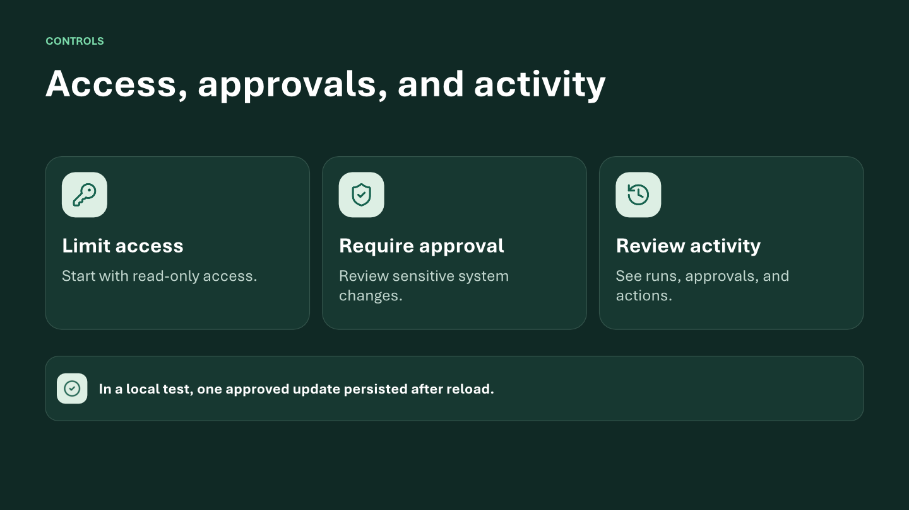
13 · Access, approvals, and activity
Full sizeSlide text
CONTROLS
Access, approvals, and activity
Limit access
Start with read-only access.
Require approval
Review sensitive system changes.
Review activity
See runs, approvals, and actions.
In a local test, one approved update persisted after reload.

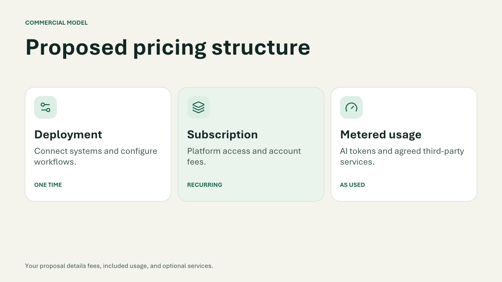
14 · Proposed pricing structure
Full sizeSlide text
COMMERCIAL MODEL
Proposed pricing structure
Deployment
Connect systems and configure workflows.
ONE TIME
Subscription
Platform access and account fees.
RECURRING
Metered usage
AI tokens and agreed third-party services.
AS USED
Your proposal details fees, included usage, and optional services.

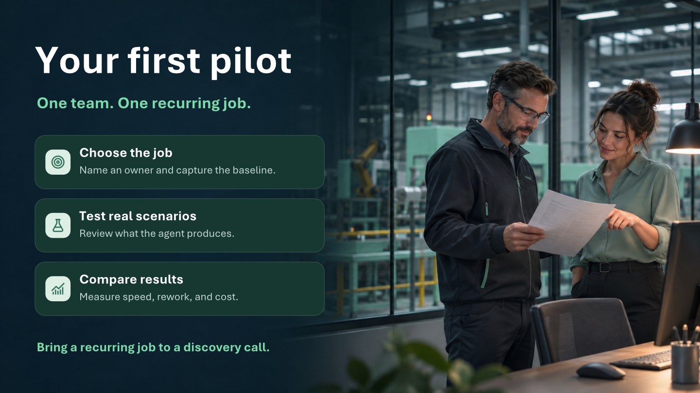
15 · Your first pilot
Full sizeSlide text
Your first pilot
One team. One recurring job.
Choose the job
Name an owner and capture the baseline.
Test real scenarios
Review what the agent produces.
Compare results
Measure speed, rework, and cost.
Bring a recurring job to a discovery call.